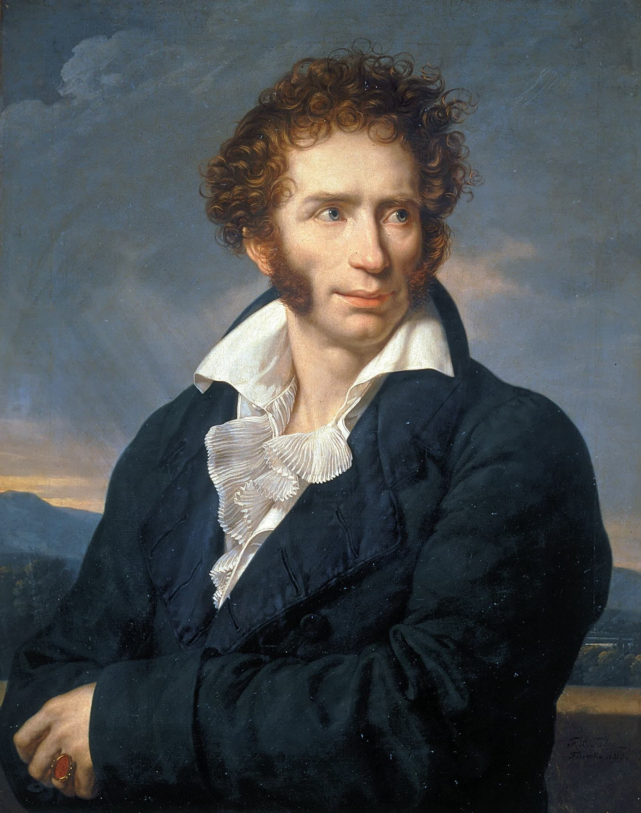
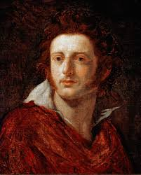
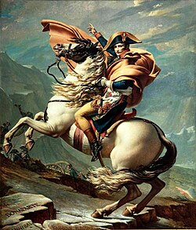

Sito multimediale interattivo
Ugo Foscolo (1778-1827) è stato uno dei padri del Romanticismo italiano, poeta, romanziere e patriota. Nato a Zante (allora Repubblica di Venezia) da padre italiano e madre greca, Foscolo visse fin dall’infanzia il conflitto tra appartenenza e sradicamento.
La formazione e le speranze giovanili:
Studiò a Venezia e a Padova. Inizialmente fervente seguace di Napoleone Bonaparte, vide nel generale francese il liberatore dell’Italia dal dominio austriaco.
Il crollo degli ideali:
Nel 1797 Napoleone cedette Venezia all'Austria con il trattato di Campoformio. Questo tradimento segnò profondamente Foscolo, trasformando il suo entusiasmo rivoluzionario in una disillusione dolorosa e definitiva.
L'esilio e la morte lontano dalla patria:
Costretto all'esilio per le sue idee politiche, si rifugiò in Inghilterra, dove morì povero e malato a Turnham Green (Londra) nel 1827. Solo nel 1871 le sue spoglie furono traslate a Firenze, nella Basilica di Santa Croce, accanto ai grandi italiani come Michelangelo e Galileo.



Romanzo epistolare
Poema civico
Liriche immortali
Poema ispirato alla mitologia